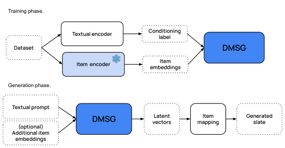

Prompt-to-Slate: Diffusion Models for Prompt-Conditioned Slate Generation (提示到列表：面向提示条件列表生成的扩散模型)
- 会议/期刊: RecSys 2025
- 作者与机构: Federico Tomasi, Francesco Fabbri, Justin Carter, Elias Kalomiris, Mounia Lalmas, Zhenwen Dai（Spotify）
- 推荐链路定位: 端到端生成式（替代召回+排序的整组 Slate 生成）
- 研究方向: 生成式推荐与离散语义ID / 多任务学习与列表级重排
- 论文原文: https://arxiv.org/abs/2408.06883v3
- 开源代码: 暂未开源（仅引用预训练文本编码器 all-MiniLM-L6-v2）
TL;DR (1分钟核心速览)
针对 Slate 生成中"组合爆炸 + 传统方法假设用户只消费单物品"的核心痛点，本文提出 DMSG：把整组 Slate 编码为定长潜向量序列，用条件扩散 Transformer 在连续潜空间建模 Slate 的联合分布，仅以自然语言 Prompt 为条件、无需任何用户历史。在 Spotify MPD / Curated 与 Amazon Bundle 三个数据集上，以相似度加权的 NDCGSim/MAPSim 全列表评测，Curated 上 NDCGSim@30 相对最强基线 BM25 提升 +17%、MAPSim@30 提升 +12.9%；线上两周 A/B（100 万用户）重复曝光 −13.4%、主动策展 +6.8%，P99 延迟 150ms。
Background & Motivation (背景与核心矛盾)
- 主流范式: Slate 生成（歌单、电商 Bundle、视频列表）主流用 RL 或 Transformer 序列模型，在物品级排序基础上拼装列表，或假设用户只从 Slate 中挑"最优一件"以规避组合复杂度。
- 前人局限: ① RL 类方法依赖强假设（单物品选择）与大量交互数据，冷启动/编辑场景失效；② LLM 自回归解码需物品在词表中有先验曝光，目录动态增删时需重训映射，且逐 token 解码难以保证整组列表的结构一致性。
- 核心洞察 (Key Insight): Slate 的"好"体现在整组共现结构（co-consumption）而非单物品相关性；扩散模型在高维连续空间建模联合分布 + 固有随机性，天然同时给出相关性与多样性，且潜空间解码器可插拔，目录变化只需更新映射函数。
- 本文切入点: 将 Slate 生成重构为"Prompt → 潜向量序列"的条件生成问题，用扩散 Transformer 一次性采样整组列表。
Method (核心方法设计)
1. 整体框架 (Overall Architecture)
DMSG 由三部分组成：(i) 编码模块：固定（非联合训练）物品编码器 \(\phi\)把离散物品\(w_i\)映射为\(d=80\)维向量，Slate 补齐/截断到定长\(n\)（音乐 32、Bundle 5），得到\(\boldsymbol{x}_0=\phi(\boldsymbol{w})\in\mathbb{R}^{n\times d}\)；(ii) 条件模块：文本编码器\(\tau\)（3 层 encoder-only Transformer，8 头、隐维 128）把 Prompt 编码为上下文\(c\)；(iii) 扩散 Transformer：3 层 Transformer + 320 维 ResBlock，通过 cross-attention 注入\(c\)，预测速度场\(\boldsymbol{v}_\theta\)。训练时对\(\boldsymbol{x}_0\)加噪并回归速度；推理时从\(\boldsymbol{x}_T\sim\mathcal{N}(0,\boldsymbol{I})\)出发，用 DDIM 仅 50 步去噪得\(\hat{\boldsymbol{x}}_0\)，再经最近邻舍入映射回离散物品，重复项做掩码后取次近邻。
flowchart TD
A["文本 Prompt y"] --> B["文本编码器 τ → 上下文 c"]
C["Slate 物品序列 w"] --> D["固定物品编码器 φ → x0 ∈ R^{n×d}"]
D --> E["前向加噪 x_t"]
B --> F["扩散 Transformer v_θ(x_t, t, c)"]
E --> F
F --> G["DDIM 50 步反向去噪 → x̂0"]
G --> H["最近邻舍入 + 去重 → 生成 Slate"]
2. 关键设计拆解 (Key Designs)
-
速度预测 + SNR+1 加权的扩散损失：直接预测噪声 \(\boldsymbol{\epsilon}\) 在低信噪比段梯度不稳，本文改用 v-prediction 并采用 "SNR+1" 加权： $\(\mathcal{L}_{\text{DMSG}}(\theta)=\mathbb{E}_{t,\boldsymbol{x}_0,\boldsymbol{v}}\left[\left\|\boldsymbol{v}-\boldsymbol{v}_\theta\left(\sqrt{\bar{\alpha}_t}\boldsymbol{x}_0+\sqrt{1-\bar{\alpha}_t}\boldsymbol{\epsilon},\,t,\,c\right)\right\|^2\right]\)$ 其中 \(\boldsymbol{v}_t=\alpha_t\boldsymbol{\epsilon}_t-\sigma_t\boldsymbol{x}_t\)。直觉：速度目标在全部噪声水平上量纲一致，避免了\(\epsilon\)-prediction 在高噪声端对语义结构的"过拟合噪声"，实测收敛更快、生成质量更高。
-
固定物品编码器 + 可插拔解码（目录解耦）：若联合训练编码器，目录一变就需重训整个扩散模型。本文冻结 \(\phi\)（音乐用 Word2Vec 共现嵌入，Bundle 用 all-MiniLM-L6-v2 零样本嵌入），仅保留舍入映射\(p_w(\boldsymbol{w}|\boldsymbol{x}_0)\) 可更新。这样新物品只需进入嵌入空间即可被生成，模型主体对目录演化保持稳定——这是相对 LLM 词表方案的关键工程优势。
-
DDIM 加速与推理开销：标准 DDPM 需上千步反向迭代，无法满足实时推荐。采用非马尔可夫 DDIM 将推理压缩到 50 步，单张 NVIDIA L4 上 P99 延迟 150ms（对照组生产系统 500ms）。训练侧 1000 epoch、Adam、lr \(10^{-4}\)，无需负采样（生成式建模天然规避了 BPR/InfoNCE 的负样本构造问题）。
Experimental Setup & Evaluation Protocol (实验设置与评估协议)
- 数据集与预处理:
| 数据集 | #Users | #Items | #Interactions/Slates | 稀疏度/密度 | 特征/场景说明 |
|---|---|---|---|---|---|
| Curated | — | — | 30,000 歌单 | — | 平台编辑精选歌单，含标题/描述/关键词 |
| MPD | — | — | 100K 歌单（从 1M 采样） | — | Spotify 百万歌单子集，2010–2017 |
| Bundle | — | 11,000 | 5,444 bundles | — | Amazon 商品 Bundle，序列长 5 |
- 数据划分与防穿越 (Splitting Strategy): Slate 级 80/20 比例划分（按整条 Slate 而非交互切分），测试集仅用于评测，无时间戳切分。
- 排名评测协议 (Ranking Protocol): 非传统 Full-Ranking，而是参考 Slate 对齐评测：生成 Slate 与参考 Slate 逐位置比对，未命中项按嵌入余弦相似度给软相关性 \(s_i=\text{cos\_sim}(\text{item}_i,\text{ref}_i)\)，得到 NDCGSim@K 与 MAPSim@K；辅以 BertScore（语义相似）与 CategorySim（类目重叠加权）。每个 Prompt 采样 5 条 Slate 取均值再跨 Prompt 聚合，报告均值±标准差。作者明示该指标为下界估计（等价相关但不在参考集中的物品被低估）。
- 对比基线与超参设置: 4 个无个性化基线——Popularity、Prompt2Vec（句嵌入+2 层 FC + 最近邻）、BM25、S2S（Transformer encoder-decoder）。物品嵌入维 \(d=80\)，扩散步数\(T\) 训练默认、推理 50 步；未报告显著性检验，仅给标准差。
Key Experimental Results (实验关键数据)
1. 主实验对比 (Main Results)
| 数据集 | 方法 | NDCGSim | MAPSim | BertScore | CategorySim |
|---|---|---|---|---|---|
| Curated@30 | BM25 | 0.6054 | 0.7955 | 0.8928 | 0.4677 |
| Curated@30 | S2S | 0.3761 | 0.4763 | 0.6531 | 0.2153 |
| Curated@30 | DMSG | 0.7087 | 0.8978 | 0.9314 | 0.4783 |
| Curated@30 | Improv. | +17.0% | +12.9% | +4.3% | +2.3% |
| MPD@30 | BM25 | 0.5614 | 0.7373 | 0.8444 | 0.3674 |
| MPD@30 | S2S | 0.3506 | 0.5247 | 0.7762 | 0.2337 |
| MPD@30 | DMSG | 0.5210 | 0.8119 | 0.8796 | 0.4792 |
| Bundle@5 | BM25 | 0.0955 | 0.4998 | 0.5338 | 0.1940 |
| Bundle@5 | Prompt2Vec | 0.1862 | 0.3292 | 0.3452 | 0.0678 |
| Bundle@5 | DMSG | 0.3157 | 0.5690 | 0.5784 | 0.4069 |
2. 消融实验 (Ablation Study)
| 变体 (MPD) | NDCGSim@30 | MAPSim@30 | BertScore | CategorySim@30 |
|---|---|---|---|---|
| DMSG (no post-process) | 0.5138 | 0.7343 | 0.8744 | 0.4789 |
| DMSG (random sort) | 0.5134 | 0.7330 | 0.8744 | 0.4788 |
| DMSG (centroid sort) | 0.5210 | 0.8119 | 0.8796 | 0.4792 |
3. 关键实验发现 (Key Findings)
- 相关性提升主要来自"整组结构"而非单物品匹配：Curated 上 DMSG 的 MAPSim 比 BM25 高 12.9%，但 CategorySim 仅高 2.3%——说明 BM25 已能做好类目对齐，DMSG 的增益来自 Slate 内部共现结构的建模，而非更准的类目检索。
- 多样性是扩散随机性的"免费副产品"：Bundle 上 DMSG 的曝光分布整体低于参考流行度（图 3），而 BM25 系统性偏向热门；同一 Prompt 多次采样时 BertScore 稳定在 ~0.8 且 Slate 间重叠度低（图 4），证明新鲜度不以质量为代价。
- 后处理影响有限但方向明确：按潜空间质心排序使 MAPSim 从 0.7343 升至 0.8119（+10.6%），说明模型把最相关物品放在潜分布中心附近；随机打乱几乎无变化，证明生成顺序本身已具结构语义。
Highlights & Limitations (亮点、对比与审稿批判)
- 与代表作对比 (vs. Prior Work): 相比 RL 式 Slate 生成（依赖单物品选择假设与大量交互），DMSG 直接建模联合分布、无需奖励函数；相比 LLM 自回归推荐（需物品在词表中有先验、目录变动需重训），DMSG 用固定物品嵌入 + 可插拔解码实现目录解耦；相比 S2S 逐 token 解码，扩散一次性生成整组潜向量，天然保证列表级一致性。
- 可迁移亮点: ① "固定物品编码器 + 可更新舍入映射"的目录解耦范式，可直接迁移到任何需要频繁增删物品的生成式推荐系统；② 用潜空间质心排序作为轻量后处理，几乎零成本提升头部位置相关性。
- 审稿级局限批判: ① 评测协议为参考 Slate 对齐的软相似度指标，非标准 Full-Ranking，且未做显著性检验，跨方法可比性存疑；② 线上 A/B 显示主动策展 +6.8% 的同时播放时长 −5.6%、跳过率 +3%，说明"新鲜度换留存"的权衡未被充分优化，且模型未做任何个性化/在线微调，长期留存影响未知。
Rating (四维评分)
- 方法创新性 (Novelty): ⭐⭐⭐⭐ （首次将潜空间扩散用于纯 Prompt 条件的整组 Slate 生成，v-prediction + 目录解耦设计有明确工程洞察，但扩散骨架本身非新）
- 评估协议与实验扎实度 (Protocol & Experiments): ⭐⭐⭐ （三数据集 + 两周百万用户线上 A/B 难得，但软相似度指标非标准排序协议、缺显著性检验、消融仅覆盖后处理）
- 写作与数学规范度 (Clarity & Rigor): ⭐⭐⭐⭐ （问题形式化与扩散推导清晰，架构图与训练/推理流程交代完整，复杂度与延迟有量化）
- 工业落地与复现价值 (Industrial & Practical Value): ⭐⭐⭐⭐ （P99 150ms 优于生产基线、目录解耦便于部署，但代码未开源、物品编码器依赖领域特定方案，复现门槛中等）